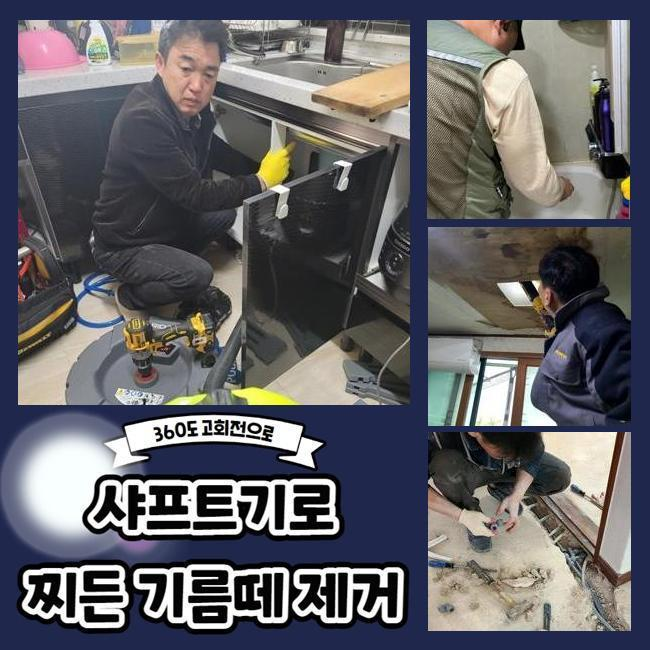
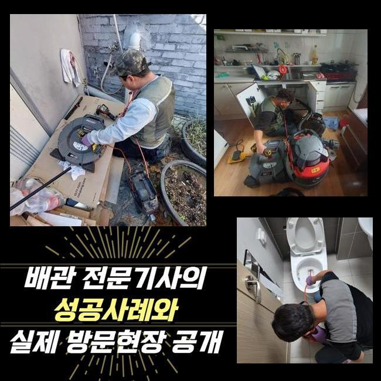
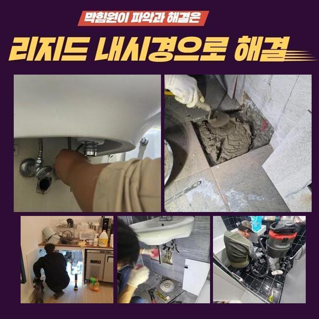
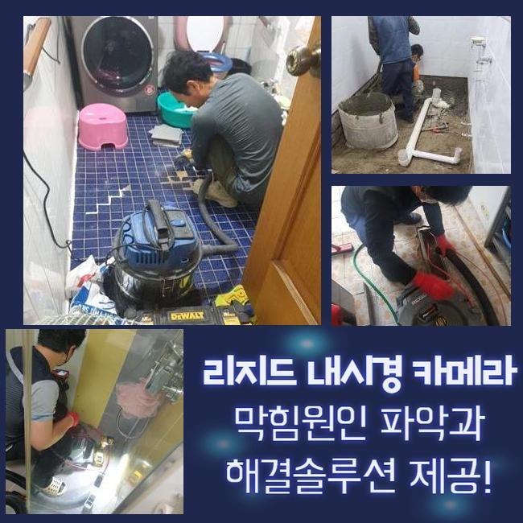
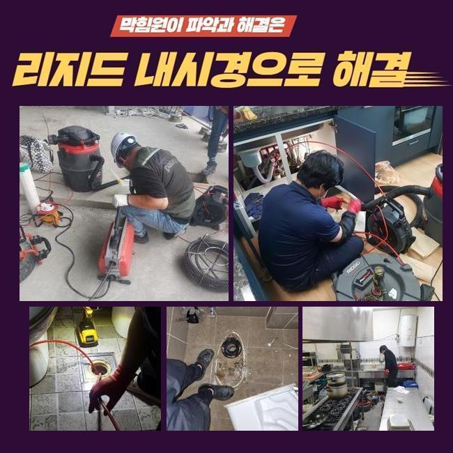
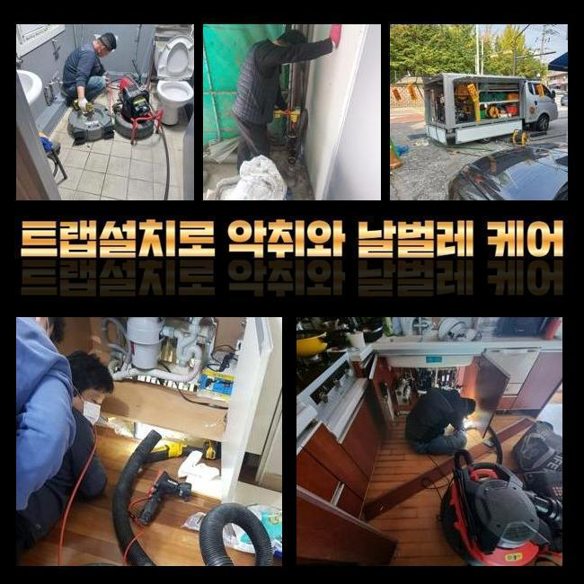

🏠 팽성읍화장실하수구뚫음 원평동 하수구청소장비 설비출장
용인 싱크대막힘 전문 시공 후기

📋 작업 개요
- 위치: 용인
- 서비스 유형: 싱크대막힘, 하수구막힘, 배관막힘, 뚫는업체, 배관청소, 고압세척, 악취차단
- 작업 일시: 2025. 2. 12. 17:48
- 업체명: 하수구수사대 (010-5615-2118)
🔍 문제 상황
팽성읍화장실하수구뚫음 원평동 하수구청소장비 설비출장
저희측은 배수시스템과 연계된 여러 시공을 진행하고 있답니다
기술자가 상시대기중에 있으며 의뢰인께서 부닥치신 트러블에 신속하게 조치해드립니다
금번에는 주방배관막힘 해소 공정을 말씀드리도록 할게요
전주에 연락을 주신 지점은 푸드코트 건물입니다
영업장의 하수구가 막혀버렸으며 설상가상으로 화장실쪽의 통수도 시원치않다고 토로하셨어요
해당지역쪽에서 근무중이었던 담당자가 즉시 내방드렸고 알맞은 방책을 시행하기로 합니다
주방배수구 정체와 화장실공간의 고장이 일어난 위치는 보양식 전문식당이었습니다
개수대 부근에서는 많은 음식찌꺼기가 취급되므로 관로체증이 빈번히 생기죠
이래서 식당주인분들을 그것에 대처한 여러가지의 조처를 실행하시곤 하죠
평상시 조심스럽게 쓰셨더라도 어느날 갑자기 큰 이물이 혼입된다면 물막힘이 발발하기 쉽기 때문에 주의하셔야 합니다
금일 소개드릴 장소는 무슨 사유로 고장이 생긴건지 신밀하게 파악하도록 합니다
일단 주방설비부터 파악하기로 합니다
한식집의 경우 일반적인 주거지의 배수시설과는 상이한 모습을 띠며 배수스텐의 부피도 상당합니다

🔎 원인 분석
💡 전문가 진단: 정밀 진단 장비를 사용하여 슬러지의 고착 여부를 판명하고 타격/세척 작업을 실시했습니다.
그렇기 때문에 유입되는 배수량도 많아질 수밖에 없는데요
그래서 통상적인 주거장소의 배수기능 테스트를 기준해서 이상을 결정내려서는 제대로된 파악이 어렵고 충분한 물을 투입해서 상태를 정밀하게 알아보는 것이 필요한겁니다
해당 과정을 신밀히 시행하지 않는다면 얼마가지 못하여서 막힘현상이 재차 발발할수 있답니다
조사를 해보았고 원활하게 배수처리가 안되고 있다는 것을 알수 있었답니다
느릿느릿 빠져버리기는 하였지만 정상적 운영을 시행하기엔 역부족이었답니다
그후에 관로안으로 배관내시경을 넣어서 분명하게 정황을 조사해보기로 하였습니다
기름찌꺼기들과 미세한 석회물질들이 관로안을 메우고 있었죠
관로 속에 들어가면 곤란한 물질들이 적체되어 정체가 생긴거랍니다
이런 부분들에 관하여 하수관에 흘러들어가는것을 주의해야할 것들을 설명하는 시간을 가져보도록 할게요
설명하는 것들을 메모해두셨다가 평상시에 적용해보시길 당부드려요
유분은 수돗물과 만나면 굳게되고 그래서 하수관에 달라붙을 확률이 큰데요
그렇기에 반드시 주방용 휴지로 소제한후에 설거지하는 게 필요한겁니다
거기에 더하여 기름수거통도 습관적으로 활용하는게 좋습니다
최근 많이 이용하는 원두커피에서 발생되는 가루들도 하수도막힘을 야기할수 있죠
커피가루는 기름과 결합하는 특징이 있기에 관안에서 뒤섞이기 쉬어요

🔧 작업 과정
그러므로 일반쓰레기로 분류하여 버리시길 바라요
조리하다가 국물류를 다이렉트로 개수대에 버린다면 관로에 누적될 가망성이 크죠
고춧가루 등은 과립이 잘기에 거름망에 안걸리고 배관쪽으로 유입될수 있어 개별적으로 버리는것이 바람직해요
튀김종류를 만드시면서 누적된 전분가루와 같은 성분도 싱크대에 곧바로 폐기한다면 응축되어서 배관정체를 유발하기 쉽습니다
그러므로 이러한 것들은 꼭 별도처리하여 배수설비를 깔끔하게 관리하는게 좋겠습니다
내시경설비로 심부까지 진단해보았는데 공용파이프에도 정체가 생겼으리라 예상되었으며 추가적으로 검정하기로 결단내렸죠
우선적으로 문의하신 분의 주방공간의 하수관 정비를 시행해야 하겠습니다
닭요리 위주로 조리를 하셔서 타시설물과 다르게 기름성분이 상당량 누적되어 있었고 또다른 잔재들과도 엉켜서 복잡한 상황이었습니다
그상황이 장시간 유지되면서 관로에 딱 붙어버린 형국이었습니다
샤프트기기를 사용하여 본 지점의 초반 세정시공을 시행하였습니다
장비의 노즐부위는 간혹가다가 교환해서 쓸때도 있지만 통상적으로 쇠줄로 만들어진 노커를 이용하는데요
가느다란 노즐에 해당 부속품이 붙어있어서 하수관안에 투입한뒤 가동시키면 고속으로 회전하면서 상존하는 하수관찌꺼기들을 분리시켜주는 결과를 만들어줍니다
보편적으로 분쇄기를 가동시키면 이물들이 수월하게 탈락합니다
그러나 앞에서 설명드린대로 여긴 공동 하수도까지 찌꺼기가 전파되었다는걸 알아낸바가 있죠
그땐 개별배수관 처리만으로 근원적인 트러블이 소멸될리 만무합니다
정리된걸로 오판될수도 있겠지만 메인 관로가 막혔다면 몇주정도가 흐른다음에 또다시 관로가 차단될수밖에 없겠죠
세대내의 하수관 소제작업을 마친다음 지하공간에 자리잡은 공용관을 검사하기로 했죠
배관내시경을 밀어넣었더니 첩첩이 겹친 녹황색의 노폐물들이 가득차 있었어요
오랜시간 누증된것으로 간주할수 있었고 크기도 크다보니 더욱더 수량이 방대해진거죠
이부분을 고압물청소를 통하여 정리하기로 결단했고 2시간30분간 청소를 실시하게 되었네요
횡주배관까지 플렉스샤프트 공정을 적용하고 의뢰자의 음식점으로 건너가서 배관 물내림과 화장실안의 배수관까지 검사를 시행하였더니 정말 깔끔하게 배수가 되어 가볍게 빠져나갔습니다
이번에 방문했던 곳은 조리과정에서 나온 노폐물들과 석회물질들이 막힘의 사유라 볼수 있었고 기계실의 공동관까지 막혀있었기에 더더욱 사태가 심각했답니다
그 부분을 분쇄장비와 고압물세척으로 순서에 맞게 정비했고 통수된 결과를 목견할수가 있던거죠
시공을 끝내고 나중에 발생가능한 문제들과 의뢰인께서 간과할수 있는 배수관관리 방안을 말씀드렸죠


✅ 작업 완료
그리고 전화로 한번더 물어보셨기에 상세하게 다시 설명드렸어요
시공을 그릇되게 이행하면 몇달뒤 배수관에 구조적인 결함까지 발생가능합니다
그렇기에 정확한 시공방식을 접목시켜 해결해내려는 기본방침이 중요해요
그것을 위하여 여러가지의 장비들을 기반으로 시공을 이행해야한다는 걸 말씀드립니다
영업장에서 급작스레 하수관이 막히면 운영상에 커다란 문제가 생기겠죠
따라서 약간이라도 트러블이 목도되었다면 지연시키지말고 기술자에게 문의하시길 당부드려요




⚠️ 주방 싱크대 배관 막힘 예방 수칙
- ✅ 기름기가 묻은 식기나 프라이팬은 설거지 전 키친타올로 반드시 기름때를 닦아내세요.
- ✅ 주기적으로 싱크대 개수대에 뜨거운 물을 가득 받아 한 번에 내려 배관 내부 기름을 씻어내세요.
- ✅ 배수구 거름망을 미세한 필터로 사용하시고 음식물 찌꺼기가 틈으로 새어 들지 않게 관리하세요.
- ✅ 베이킹소다와 식초를 뜨거운 물과 함께 일주일에 한 번씩 부어주면 배관 살균과 막힘 예방에 좋습니다.
💡 핵심 정리
- 확실한 장비 작업(내시경 점검 및 샤프트 스케일링)으로 원인을 뿌리 뽑습니다.
- 작업 후 1년 이내에 동일한 부위 재발 시 100% 무상 A/S 서비스를 보장합니다.
- 서울 · 경기 · 인천 전 지역에 24시간 언제든 긴급 출동할 수 있도록 항시 대기 중입니다.
❓ 자주 묻는 질문 (FAQ)
🚨 용인 싱크대막힘 문제로 고민이신가요?
정확한 원인 진단과 확실한 시공으로 재발 없는 해결을 약속드립니다.
24시간 긴급 출동 | 서울 · 경기 · 인천 전지역 | 1년 내 재발 시 무상 A/S